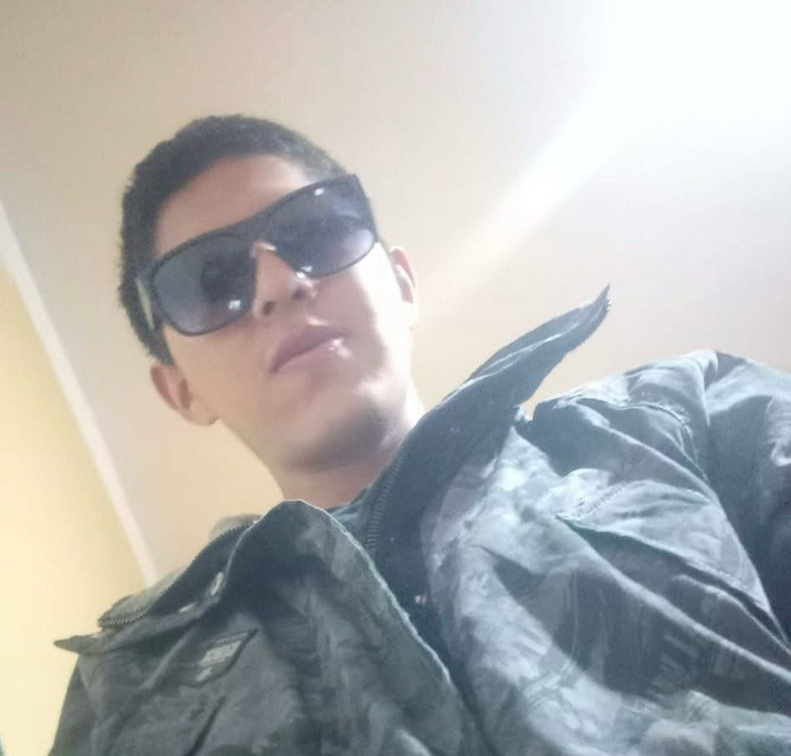
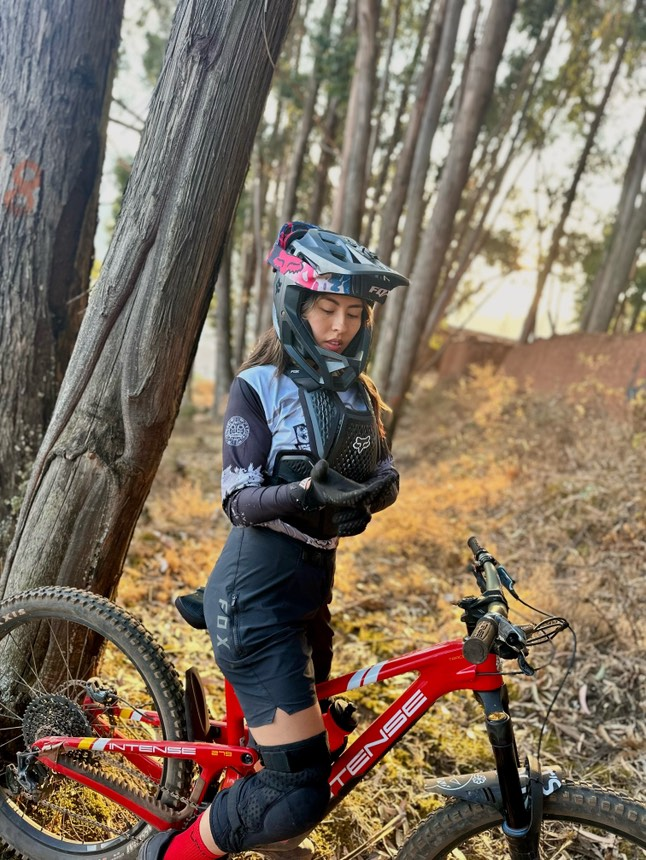

Integrante 1: Mi nombre es Christian Vera Callapiña , Tengo 26 años , soy Bachiller de la Escuela Profesional de Administración de Empresas , vivo en la ciudad de Cusco.Mi hobbit o pasatiempo es el deporte, como el básquet y el voley.
Integrante 2: Mi nombre es Daniela Ugarte Landaveri , Tengo 23 años Soy egresada de la carrera profesional de Turismo en la Universidad Andina del Cusco , Mi hobbit es viajar y hacer fotografía.
Integrante 3: Mi nombre es Aldahir Carrasco condori Tengo 24 años Soy egresado de la carrera de administración de empresas universidad andina del Cusco, Mi hobbie es el trekking y futbol.
Integrante 4: Melany Marycarmen Baca Servera Tengo 22 años, curso el séptimo semestre en la Universidad Andina del Cusco, Mis hobbies: Downhill y gym.
Es el componente de la mercadotecnia que utiliza internet y tecnologías digitales en línea, como computadoras de escritorio, teléfonos móviles y otras plataformas y medios digitales para promover productos y servicios.
Uno de los objetivos claves del mercadeo digital moderno es aumentar el conocimiento de la marca, el grado en que los clientes y el público en general están familiarizados con una marca en particular y la reconocen
Mayor visibilidad y alcance global: A través de estrategias digitales como la optimización para motores de búsqueda (SEO), el marketing en redes sociales, y la publicidad online, las empresas turísticas pueden llegar a un público global, incrementando su visibilidad sin importar la ubicación geográfica
Los usuarios generan una gran cantidad de datos en cada paso que dan en el camino del recorrido del cliente y las marcas ahora pueden usar esos datos para activar a su audiencia conocida con la compra de medios programática basada en datos. Sin exponer la privacidad de los clientes, los datos de los usuarios se pueden recopilar de canales digitales (por ejemplo, cuando el cliente visita un sitio web, lee un correo electrónico o inicia e interactúa con la aplicación móvil de una marca), las marcas también pueden recopilar datos de interacciones con los clientes mundiales, como visitas a tiendas físicas y de conjuntos de datos de motores de ventas y CRM.
Cuando algun turista desee ir a visitar a Cusco, la era digital podria generar informacion de inmediata al turista respecto al lugar que visito.